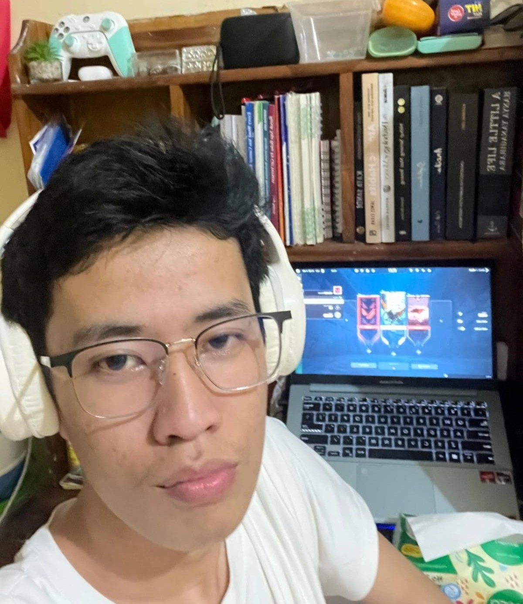
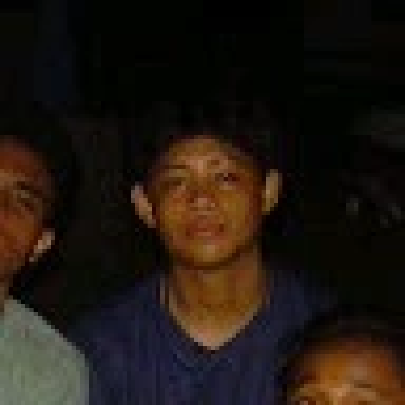
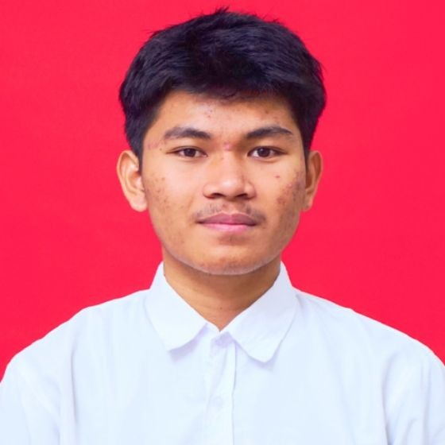
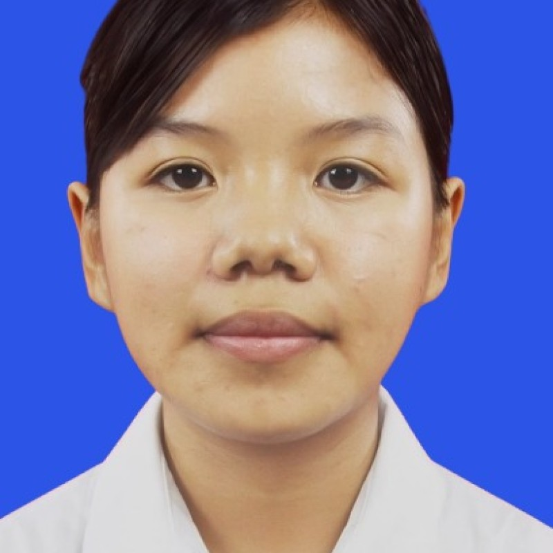

Meningkatkan kesadaran kesehatan
Masyarakat memahami bahwa air bersih dan sanitasi yang layak dapat mencegah penyakit serta menjaga kualitas hidup.
Website ini dibuat sebagai media edukasi yang membantu masyarakat memahami pentingnya air bersih, sanitasi yang layak, serta tindakan nyata untuk menjaga lingkungan.
Website Air Bersih untuk Semua dibuat untuk membantu masyarakat memahami bahwa air bersih bukanlah sekadar kebutuhan dasar, melainkan fondasi utama kesehatan, pendidikan, dan lingkungan yang sehat.
Melalui konten edukasi, tips, dan artikel, website ini bertujuan menumbuhkan kepedulian masyarakat terhadap pengelolaan air yang bijak, kebersihan lingkungan, dan perlindungan sumber air.
Masyarakat memahami bahwa air bersih dan sanitasi yang layak dapat mencegah penyakit serta menjaga kualitas hidup.

Informasi praktis membantu keluarga menghemat air, menjaga kebersihan, dan berkontribusi pada lingkungan yang lebih sehat.

Dengan aksi sederhana, masyarakat dapat bekerja sama menjaga sungai, saluran air, dan sumber air di lingkungan sekitar.

Perancang konten dan pengelola materi edukasi.

Pengembang tata letak dan struktur halaman website.
Pengelola referensi dan penyesuaian tampilan responsif.

Penguji fitur dan pengelola pengecekan kebutuhan website.

Mengelola dokumentasi dan memastikan kelengkapan informasi proyek.
Mengatur tampilan halaman, warna, serta pengalaman pengguna.
Menyusun materi, penjelasan, dan artikel yang relevan dengan SDG 6.
Memeriksa tata letak, kesinambungan navigasi, dan kelengkapan website.